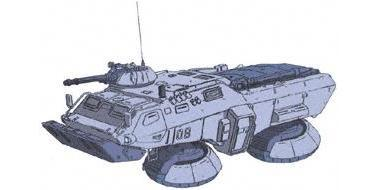

| Type 74 |
|
|  | |
General and Technical Data |
|
|
Unit type: forward combat, communications, and command vehicle Equipment and design features: sensors, range 9000 meters; underground sonar Armament: 20mm gattling gun turret, 2x 4-tube grenade launcher |
|
| Technical and Historical Notes | |
|
A much newer vehicle than the aging Type 61 MBT, the Type 74 is a sign of the times: lightly armed, it sports hover jets instead of tracks for increased mobility.
Unlike most other Federation vehicles, which are designed purely for combat, the Type 74 is exclusively a support unit. The four-man Type 74 crew make use of the truck's expansive sensor arrays, as well as the revolutionary "underground sonar" system to peek in on enemy units without being seen. Its capabilities are more or less equivalent to Zeon's Luggon reconnaissance aircraft, though the Type 74 has a definate advantage that it doesn't have to stick its ass out to enemy fire at any point whilst eavesdropping on the enemy. Its sole armament is a 20mm gattling gun mounted in a turret on the truck's right-front side; it is not intended for combat. Underground Sonar works by a means of a piton fired into the ground. It can pick up the vibration of units moving across the surface at great range, and through dampening systems, can direct its search field to a very wide or very narrow area. Obviously, it's essentially worthless for picking up enemy aircraft or other units that don't actually touch the ground. (even the MS-09 Dom is relatively immune to such detection)
Underground Sonar |
 RPG quick stats sheet
RPG quick stats sheet